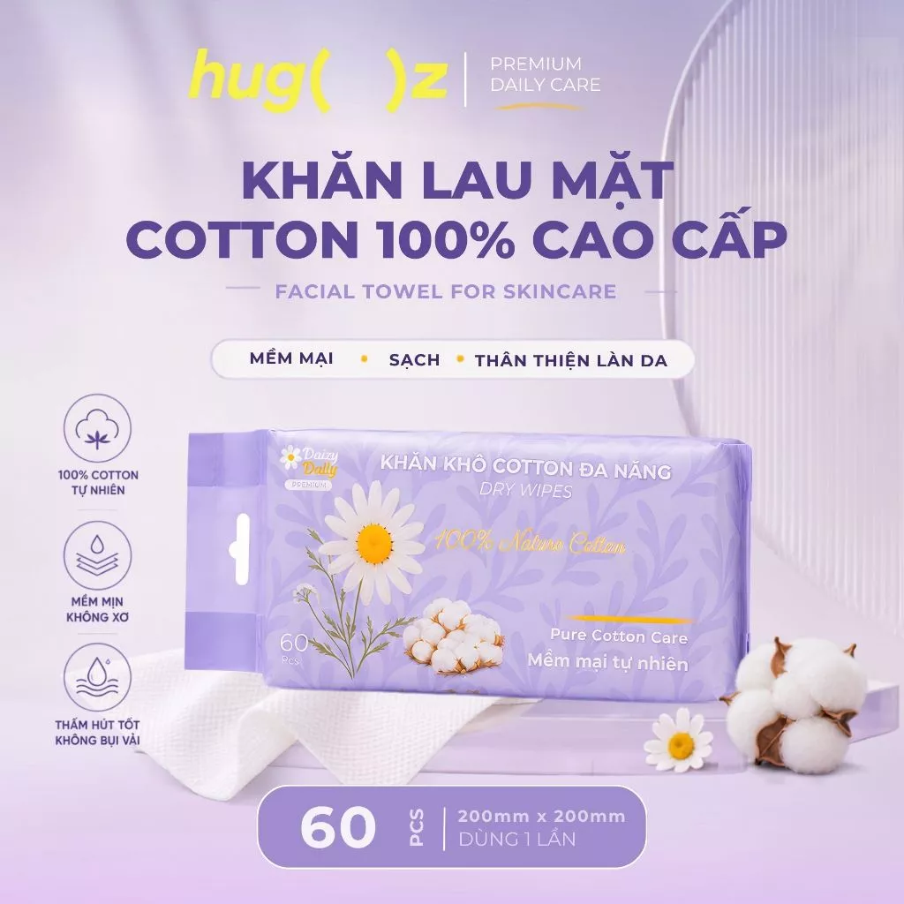
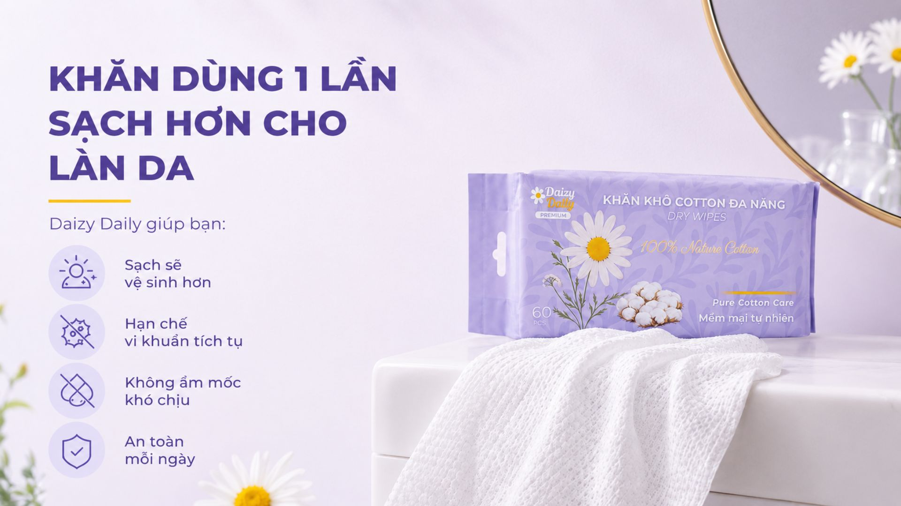
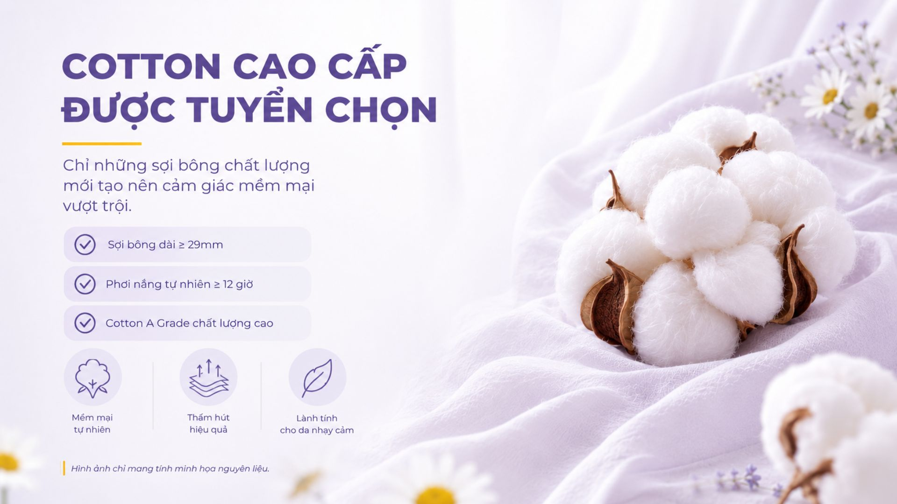
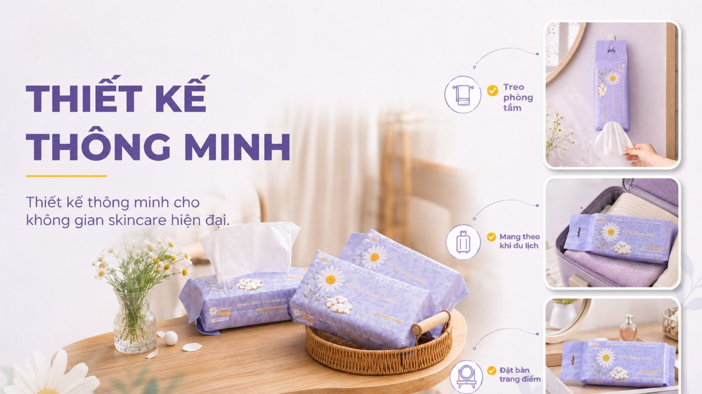
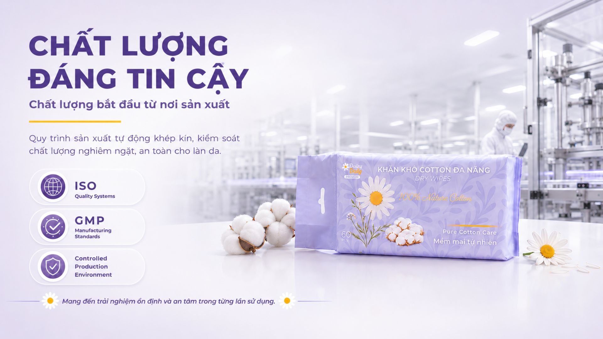

Khăn Mặt Khô Cotton 100% Daizy Daily
Khăn mặt khô cotton 100% tự nhiên Daizy Daily túi 60 tờ. Sợi bông mềm mại như mây, khổ lớn 20×20 cm thấm hút tức thì và an toàn tuyệt đối cho làn da nhạy cảm.
- Mềm mịn 5D, không xơ sợi: Không gây trầy xước hay rát da khi lau khô mặt và tẩy trang.
- Dai bền khi thấm nước: Dùng khô lau mặt hoặc nhúng nước ấm, đắp toner & lotion mask.
- An toàn thuần khiết: 100% cotton tự nhiên, không hương liệu, không cồn, không paraben, không huỳnh quang.

Mà Là Một Bước Trong Chu Trình Chăm Sóc Da

Dịu Nhẹ Trong Từng Bước Dưỡng Da
Làn da sau khi làm sạch rất nhạy cảm và cần được nâng niu. Khăn mặt khô Daizy Daily giúp bạn tối ưu từng bước dưỡng da mỗi ngày một cách nhẹ nhàng và sạch sẽ nhất.

Khăn Dùng 1 Lần Sạch Hơn Cho Làn Da
Khăn mặt vải treo nhà tắm ẩm ướt là nơi tích tụ hàng triệu vi khuẩn và nấm mốc — nguyên nhân hàng đầu gây mụn ẩn dai dẳng. Daizy Daily mang lại sự sạch sẽ chuẩn da liễu.

Cotton Cao Cấp Tuyển Chọn — Selected Premium Cotton
Chỉ những sợi bông chất lượng mới tạo nên cảm giác mềm mại vượt trội. Được tinh tuyển từ 100% cotton tự nhiên, thuần khiết và dịu nhẹ cho mọi làn da nhạy cảm.
Công Nghệ Mềm Mại 5D — Mềm Mại Có Thể Cảm Nhận
Công nghệ xử lý liên kết sợi tiên tiến mang lại 5 đặc tính hoàn hảo trong một chiếc khăn:

Khổ Lớn 20 × 20 CM — Cho Không Gian Skincare Hiện Đại
Khổ khăn 20×20 cm rộng rãi bao phủ vừa vặn trọn vẹn khuôn mặt. Thiết kế bao bì tím thanh lịch, linh hoạt mọi tình huống sử dụng hàng ngày.

Chất Lượng Bắt Đầu Từ Nơi Sản Xuất
Daizy Daily được sản xuất trong hệ thống sản xuất tự động khép kín, không khí được lọc liên tục, nhà máy chuẩn sản xuất cho sản phẩm tiếp xúc làn da và được kiểm soát chất lượng nghiêm ngặt theo tiêu chuẩn quốc tế: ISO Quality Systems, GMP Manufacturing Standards, Controlled Production Environment.
Hệ thống quản lý chất lượng đồng bộ trên từng lô hàng.
Tiêu chuẩn thực hành sản xuất tốt cho sản phẩm tiếp xúc da.
Dây chuyền tự động khép kín, không khí lọc liên tục.

Chọn Gói Khăn Mặt Khô Cotton Daizy Daily (60 Tờ/Túi)
Kiểm tra hàng trước khi thanh toán • Giao tận nhà toàn quốc (COD)

Cam Kết Mua Hàng Chính Hãng Daizy Daily
- ✓ Đổi trả miễn phí trong 7 ngày nếu bao bì rách hoặc lỗi sản xuất.
- ✓ Cho phép đồng kiểm sản phẩm trước khi thanh toán COD.
- ✓ Đóng gói hộp carton sạch sẽ, giao nhanh toàn quốc 2–4 ngày.
Đặt Hàng Nhanh — Giao Tận Nhà
Thanh Toán Khi Nhận Hàng (COD)Khách Hàng Nói Gì Về Khăn Mặt Khô Daizy Daily?
Câu Hỏi Thường Gặp
Khăn mặt khô cotton Daizy Daily có bị rụng xơ bông hay bám bụi vải không?
Hoàn toàn không. Khăn sử dụng 100% sợi cotton tự nhiên kết hợp công nghệ dệt 5D tiên tiến giúp các sợi liên kết chặt chẽ, không bị mủn rách hay để lại bất kỳ xơ sợi nào trên da mặt kể cả khi nhúng đẫm nước.
Kích thước 20×20 cm có đủ lớn để lau khô cả mặt không?
Kích thước 20×20 cm là tỷ lệ lý tưởng được nghiên cứu cho skincare. Chỉ cần 1 tờ khăn duy nhất là đủ bao phủ và thấm khô toàn bộ khuôn mặt cùng vùng cổ một cách nhanh chóng và dễ chịu.
Khăn có thể dùng để đắp lotion mask hoặc tẩy trang không?
Rất phù hợp. Nhờ cấu trúc sợi cotton giữ nước tốt, bạn có thể thấm toner để đắp lotion mask cấp ẩm sâu, hoặc kết hợp nước tẩy trang lấy sạch lớp trang điểm mà không lo chà xát rát da.
Chính sách giao hàng và thanh toán như thế nào?
Daizy Daily hỗ trợ giao hàng tận nhà trên toàn quốc. Bạn được mở hộp kiểm tra đúng số lượng sản phẩm trước khi thanh toán tiền mặt cho nhân viên giao hàng (COD).